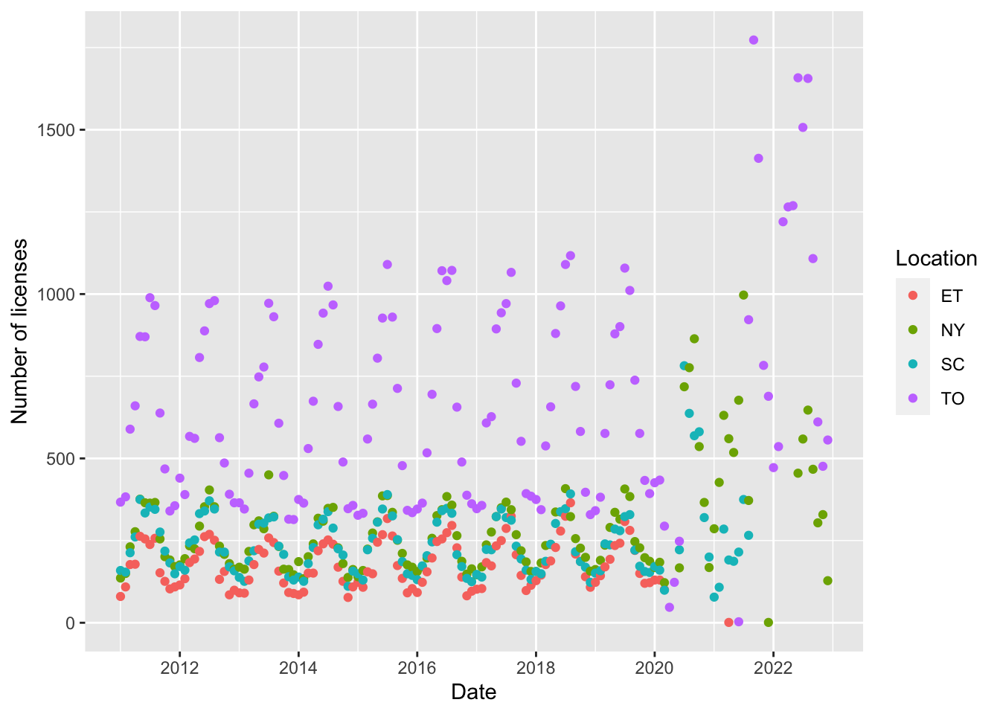

library(lubridate)Loading required package: timechange
Attaching package: 'lubridate'The following objects are masked from 'package:base':
date, intersect, setdiff, unionlibrary(opendatatoronto)
library(tidyverse)── Attaching packages
───────────────────────────────────────
tidyverse 1.3.2 ──✔ ggplot2 3.4.0 ✔ purrr 1.0.0
✔ tibble 3.1.8 ✔ dplyr 1.0.10
✔ tidyr 1.2.1 ✔ stringr 1.5.0
✔ readr 2.1.3 ✔ forcats 0.5.2
── Conflicts ────────────────────────────────────────── tidyverse_conflicts() ──
✖ lubridate::as.difftime() masks base::as.difftime()
✖ lubridate::date() masks base::date()
✖ dplyr::filter() masks stats::filter()
✖ lubridate::intersect() masks base::intersect()
✖ dplyr::lag() masks stats::lag()
✖ lubridate::setdiff() masks base::setdiff()
✖ lubridate::union() masks base::union()marriage_licence_packages <- search_packages("Marriage Licence Statistics")
marriage_licence_resources <- marriage_licence_packages %>%
list_package_resources()
marriage_licence_statistics <- marriage_licence_resources %>%
filter(name == "Marriage Licence Statistics Data") |>
get_resource()
marriage_licence_statistics |>
separate(col = TIME_PERIOD,
into = c("Year", "Month"),
sep = "-") |>
mutate(Day = 1,
Year = as.numeric(Year),
Month = as.numeric(Month)) |>
mutate(date = paste(Year, Month, Day, sep = "-")) |>
mutate(date = ymd(date)) |>
ggplot(aes(x = date,
y = MARRIAGE_LICENSES,
color = CIVIC_CENTRE)) +
geom_point() +
labs(x = "Date",
y = "Number of licenses",
color = "Location")